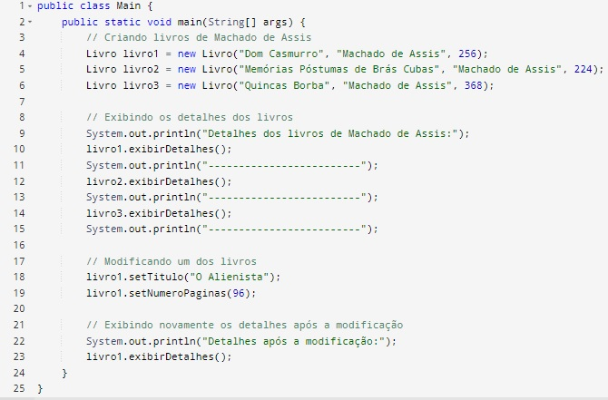

1 Exercício Avaliativo
1.1 Questão 1
1.1.1 Conceito de Encapsulamento e Information Hiding
Encapsulamento refere-se à prática de agrupar dados e métodos que operam sobre esses dados em uma única unidade, geralmente uma classe. Isso permite que a implementação interna de uma classe seja escondida do resto do código, expondo apenas uma interface pública para interação. Tendo como
Information Hiding: chamado de Ocultação de Informações é um princípio mais amplo que se refere à ideia de esconder os detalhes de implementação de uma classe ou módulo, expondo apenas o que é necessário para o uso adequado. Isso reduz a complexidade percebida e protege a integridade do sistema, permitindo que as mudanças na implementação interna não afetem o código que usa a classe
A aplicação de encapsulamento e ocultação de informações em projetos de software é crucial para garantir a segurança, modularidade, manutenção e clareza do código. Esses conceitos ajudam a construir sistemas mais robustos, flexíveis e fáceis de entender e manter.
1.2 Questão 2
1.2.1 Visibilidade de Atributos e Métodos
Os Modificadores controlam o acesso aos atributos e métodos de uma classe. Eles ajudam a definir como e onde os membros de uma classe podem ser acessados e modificados, proporcionando diferentes níveis de proteção e encapsulamento.
- public
O modificador public torna o membro acessível de qualquer lugar do código, seja dentro da mesma classe, em outras classes no mesmo pacote, ou até mesmo em classes de outros pacotes.
- private
O modificador private restringe o acesso ao membro para dentro da própria classe. Nenhuma outra classe pode acessar diretamente membros private.
- protected
O modificador protected permite que o membro seja acessado por classes no mesmo pacote e por subclasses, mesmo que estejam em pacotes diferentes
- Default (sem modificador)
Quando nenhum modificador de visibilidade é especificado, o acesso é “package-private” (ou padrão). Isso significa que o membro é acessível apenas dentro do mesmo pacote.
1.3 Questão 3
1.3.1 Separação de Responsabilidade
O princípio da separação de responsabilidades (Separation of Concerns) é uma prática essencial em design de software, especialmente em paradigmas como a Orientação a Objetos (OO). Ele preconiza a divisão de um sistema em partes distintas, cada uma responsável por um aspecto específico do comportamento do sistema, de modo que essas partes sejam relativamente independentes. O objetivo é aumentar a modularidade, facilitando a manutenção, evolução e compreensão do código.
1.3.1.1 Aplicação na Orientação a Objeto
Na Orientação a Objetos em Java, o princípio da separação de responsabilidades é aplicado de várias formas, influenciando diretamente o design de classes, métodos e interfaces. Abaixo, discutimos algumas abordagens práticas:
Design de Classes e Métodos: Cada classe deve ter uma única responsabilidade. Se uma classe é responsável por mais de uma coisa, ela tende a se tornar complexa e difícil de manter. Por exemplo, uma classe “Carro” deve ser responsável apenas pelos atributos e comportamentos que caracterizam um carro, como modelo, marca, velocidade etc., enquanto outra classe, como “Motor”, seria responsável pelos detalhes do motor do carro.
Uso de Interfaces: Interfaces ajudam a separar preocupações ao definir contratos para diferentes tipos de comportamento. Por exemplo, se um objeto precisa realizar operações relacionadas a persistência de dados, ele poderia implementar uma interface Persistable. Outra interface, Serializable, pode ser aplicada para definir que objetos podem ser convertidos para um fluxo de dados. Essas interfaces mantêm as preocupações separadas e evitam sobrecarga de responsabilidade em uma única classe.
Princípio de Responsabilidade Única (SRP): Esse princípio, que é parte dos princípios SOLID, é uma forma direta de aplicar a separação de responsabilidades. Uma classe deve ter apenas um motivo para mudar, ou seja, ela deve ser responsável por apenas uma coisa. Por exemplo, em um sistema de pedidos, uma classe Pedido deveria se preocupar apenas com os detalhes de um pedido, enquanto uma classe GerenciadorDeEstoque seria responsável por ajustar a quantidade de itens em estoque. Isso evita que mudanças em uma parte do sistema tenham efeitos colaterais inesperados em outras partes.
Arquitetura em Camadas:
Em um sistema maior, a separação de responsabilidades pode ser implementada por meio de uma arquitetura em camadas, onde diferentes camadas têm responsabilidades específicas. Por exemplo, a camada de apresentação (UI) é responsável por lidar com a interface do usuário, a camada de lógica de negócios lida com as regras do sistema, e a camada de persistência lida com o armazenamento de dados. Isso permite que cada camada seja desenvolvida e mantida de forma independente.
- Injeção de Dependências (Dependency Injection):
O uso de injeção de dependências também é uma técnica útil para aplicar a separação de responsabilidades. Com ela, uma classe não é responsável por criar suas dependências. Em vez disso, essas dependências são fornecidas externamente (normalmente por um framework). Isso permite que as classes se concentrem em suas próprias responsabilidades, sem se preocupar com a gestão de instâncias de outros objetos.
1.4 Questão 4
1.4.1 Implementação Prática - Classe Livro
| Classe Livro | Classe main |
|---|---|
 |
 |
1.5 Questão 5
1.5.1 Extensão Prática - Classe Biblioteca
| Classe livro | Classe biblioteca | Classe main |
|---|---|---|